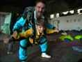
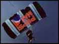
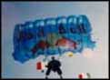
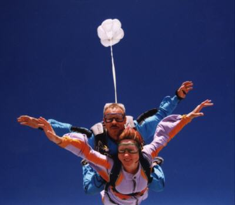
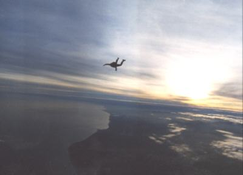
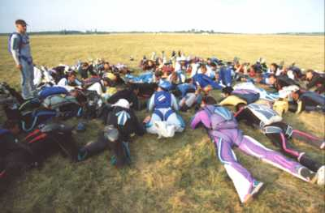
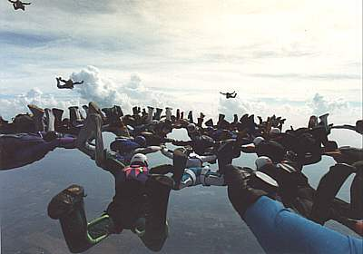
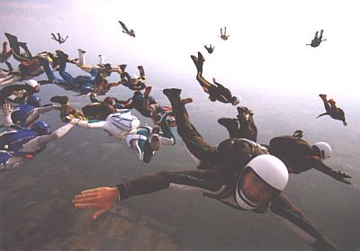
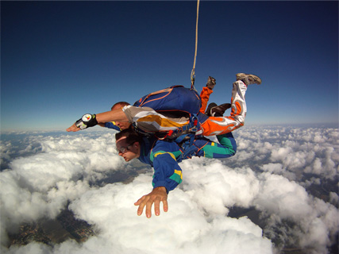
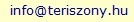

| AKTUELL IN
UNGARN |
| |
|
|
| |
| |
|
|
| |
| |
 |
| |
| |
|
|
 |
Die ultimative Mutprobe
für
Jung
und Alt, Groß und Klein,
ab 150 cm Körpergröße und im allg. bis 90
Kilo |
 |
|
Vom
Tandemsprung bis zum Formationssprung - Ihre Mutprobe bei uns,
in der
Nähe von Budapest, halbwegs zum Plattensee bzw. Balaton.
Normalerweise ab Frühjahr, bei
schönem Wetter auch
im Winter. Profis und Anfänger, Jung und Alt, Groß
und Klein, bei uns
sind alle herzlich eingeladen - auch wir waren mal Anfänger!
Bei
uns sind Sie in
sicheren
Händen:
|
- unsere
Clubpiloten sind professionelle, festangestellte
Flieger renommierter Fluggesellschaften,
- unser
Tandempilot ist ein von den
besten in Ungarn mit viel Erfahrung, mit
mehr als 1.000
Sprüngen,
unsere
Flugzeuge werden laufend bestens gewartet,
- wir
benutzen beste
Springerausrüstung aus deutscher Produktion,
- die
meisten
Anfänger in Ungarn wählen unseren, in langen Jahren
zusammengeschweißten Springerclub.
|
| |
|

|
|
|
Unsere
Erfahrung und Können ist über die Landesgrenzen
hinaus bekannt. Wir
werden bei Werbeveranstaltungen und Luftparaden laufend gefragt.
Beispiele: Werbesprünge für British Tobacco, Fosters
Beere, Pepsi Cola
und Red Bull. |
|
| |
Anfänger:
Aus juristischen Gründen darf man
einen Solosprung erst nach 5
Tandemsprüngen zum erstenmal allein ausführen. Der
erste Solosprung ist
erfahrungsgemäß die größte
Mutprobe im Leben und dabei verliert manch
einer, trotz sorgfältiger Vorbereitung und Betreung bis zur
Landung,
seine Großmäuligkeit.
DER
ULTIMATIVE KICK für
Profis
und
Anfänger - Für
Leute,
wie du und ich, die
ebenfalls der Meinung sind, dass Bungeejumping aus nur 100 Meter
Höhe
noch nicht ausreicht für eine echte Mutprobe - und
für alle, die im Leben noch mal etwas erleben
möchten. Mit dem
Fallschirm
fällt man ca. 60mal weiter als mit dem Bungeeseil - bei
einem vergleichbaren Preis für den Sprung. Im
Gegensatz zu den
meist
amateurhaften Anfängern in der Bungeebranche, bietet unser
Skydivingverein
sichere Sprünge an - mit Jahrzehnte lang professionell
geschulten,
erfahrenen
Springlehrern und zu einem günstigen Preis.
Gesundheit
und Alter - In unserem Club befinden sich mehrere
Springlehrer mit langjähriger Erfahrung. Sie sind auf alles
vorbereitet, auch Ihr Alter spielt bei uns keine Rolle. Sollten Sie mit
80 Jahren ihren ersten Sprung planen, dann sind Sie noch lange nicht
unser ältester Mitspringer. Den Altersrekord hält bei
uns eine Dame mit
84 Jahren. Die Erfahrung zeigt, dass Anfänger bis zu einem
Gewicht von
100 kg kein gesundheitliches Risiko eingehen, bei Zweifel sollten Sie
einen
Fliegerarzt konsultieren und womöglich etwas
für Ihre
Gesundheit tun.
ANGEBOT
1 - für jedermann:
ein Tandemsprung
für fast jedermann, angebunden an einen erfahrenen
Springer, aus einer
Höhe von 3.500 bis 4.000 Meter - auf einem Flughafen in der
Nähe von
Budapest. Auf Wunsch werden Sie von einem dritten Mann, einem
Kameramann begleitet
und von ihm auf Video aufgenommen. Die Videoaufnahme bekommen Sie
bereits auf dem Flughafen kurz nach der Landung ausgehändigt -
ein
Erinnerungsstück für das ganze Leben, ein Beweis
für Ihren Mut und dass
Sie zu uns gehören.
ANGEBOT
2 - für erfahrene Springer und
Anfänger: die
das Skydiving in unserem Club erlernen und/oder mit uns gemeinsam
üben
wollen.
|
Wir
organisieren Springercamps im ganzen
Jahr...
...witterungsabhängig
bevorzugt Sommercamps.
Sie können bei uns das
Fallschirmspringen erlernen, üben und auch professionelle
Gruppenformationen mit uns gemeinsam in einer großen Runde
vorführen.
Dabei spielt es keine Rolle, ob Sie schon ein Fallschirmprofi sind,
bisher nur erste Erfahrungen gesammelt haben oder noch nie einen
Fallschirm von der Nähe gesehen haben. Es kommt einzig allein
auf Ihre
Wille und Mut an ... und wenn es Ihnen nur darum geht, einmal den
ultimativen Kick zu erleben, dann sind Sie bei uns besonders herzlich
willkommen. |
|
|
 |
Aller Anfang ist ein
Tandemsprung mit einem erfahrenen Lehrer
unseres
Springerclubs. Dabei lernen Sie sich selbst von einer neuen Seite
kennen. Ihr Adrenalinspiegel spielt dabei eine wichtige Rolle.
Über die Ausrüstung sollten
Sie sich keine
Gedanken machen. Wir
versorgen alle Clubgäste mit qualitativ bester
Ausrüstung. Sie wird in
Deutschland produziert und gewartet. |
 |
Falls
auch
Sie zu denen gehören, die genügend Mut mitbringen,
dann dauert es nicht
mehr lange, bis Sie von sich aus den ersten Solosprung
wagen - in der Regel ist dies für Anfänger
der 6. Sprung - bei uns aus einer Höhe von über 4.000
Meter.
|
|
 |
Früher
oder später
können
Sie sich an unseren Formationssprüngen beteiligen. Diese
Sprünge
werden gründlich einstudiert und vorher am Boden
geübt.
Ein
Formationssprung
aus einer Clubmaschine. |
|
|
 |
Jede
Formation erreicht ihren Höhepunkt....
....und löst sich einmal zwangsweise auf. |
 |
Übrigens: Der
Springlehrer wird Tandempilot genannt.
|
|  |
| |
Die eigene Vorbereitung:
Damit
Sie springen dürfen, sollten Sie mindestens 150 cm
groß sein, aber nicht über 100 kg
wiegen und möglichst gute körperliche Voraussetzungen
mitbringen - keine Kreislaufprobleme haben, beim Zweifel bitte
einen Fliegerarzt konsultieren. Zum Sprung sollten Sie einfache, am
besten sportliche Bekleidung tragen, möglichst wenig leichte
Kost vor dem Sprung verzehren und nur kohlensäurefreie
Getränke trinken.
Der Ablauf eines Tandemsprunges
bei uns:
Gesprungen
wird erst dann, wenn die Wettervoraussetzungen gegeben sind. Die
Gundvoraussetzung für den Sprung ist aus
Sicherheitsgründen eine
gründliche Vorbereitung vor
dem Sprung. In etwa 15 Minuten erfährt der
Anfänger alles, was er während des Sprunges zu tun
hat. Die komplette Springerausrüstung wird von uns
bereitgestellt: ein
speziell für Tandemsprünge entwickelter jumpsuit bzw.
Springeroverall, außerdem Schirm, Sicherheitsgurt,
Brille und Helm. Der Absprung erfolgt aus einer Höhe
zwischen 3.500 und 4.000 Metern. Angegurtet an den
Tandempiloten dauert der freie Fall 45 bis 55 Sekunden bis der Schirm
geöffnet wird. Das anschließende Segeln mit dem
Schirm dauert noch weitere 5 Minuten.
Vom Absprung aus dem Flugzeug bis zur Landung werden alle
Aktivitäten vom Tandempiloten getätigt: Sprung,
Stabilisierung der Körperhaltung, Abwurf eines
Stabilisatorschirmes, Öffnung des Fallschirmes. Der
Tandempilot führt alle technischen
Maßnahmen bis zur Landung durch. Zur Erinnerung an den Sprung
kann eine DVD-Videoaufnahme vom Sprung gefertigt werden.
Über weitere Einzelheiten
und Gruppenvergünstigungen erkundigen Sie
sich bitte bei unserem erfahrensten, deutschsprachigen
Tandempiloten,
Herrn Balázs Dóri, Telefon: +36 20 941 7903 oder per E-Mail: |
|
|
|
 |
| |
| |
Ungarn-Tourist Team

|
| |
 |
| |
|